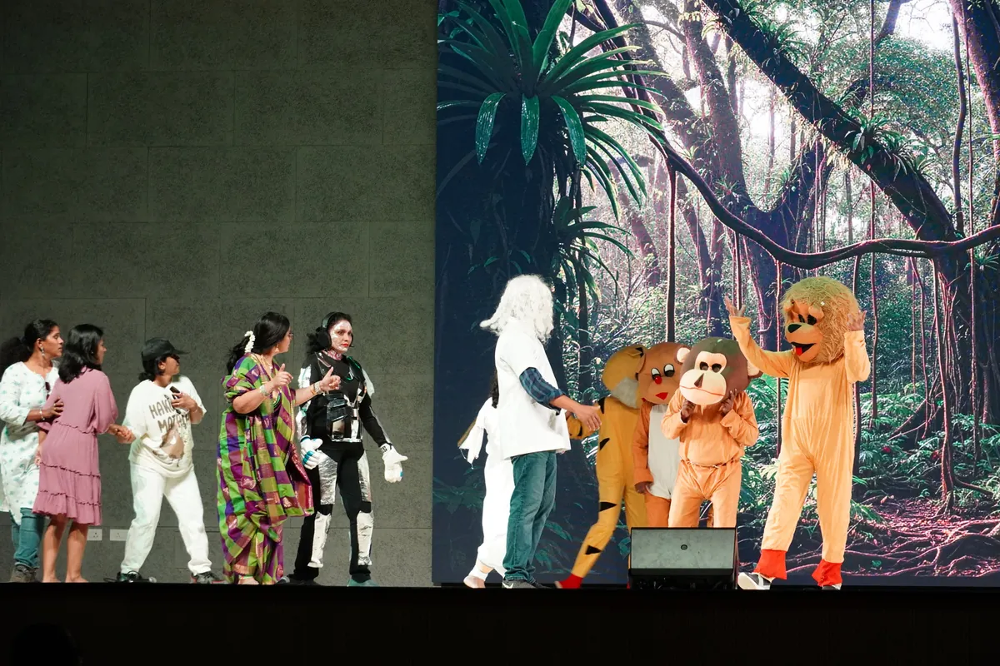
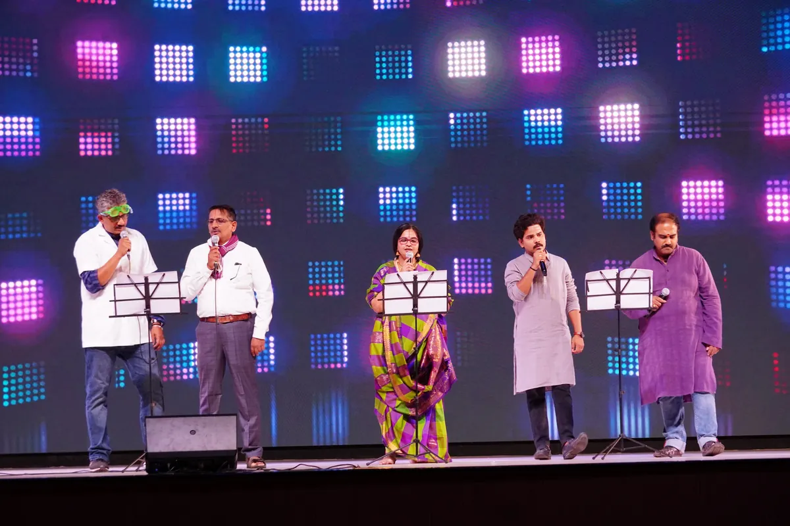
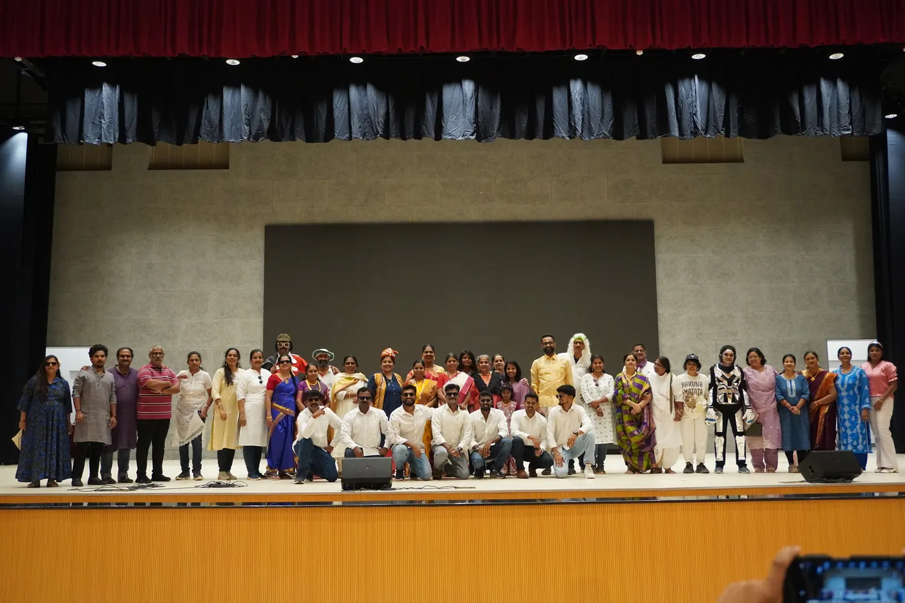

From the term's CVP report
Children's Day: the teachers take the stage
Teachers danced, sang, walked a fashion show and performed a skit called Time Travel for their students.

Children's Day is one of the most eagerly awaited days at CIRS, and on 14 November 2025 the teachers organised a programme exclusively for the students.
The stage came alive with the teachers' dances and songs and a fashion show. The skit Time Travel was the highlight of the celebration and was warmly received by the students. A special dinner rounded off the day.
Why it matters
The day is meant to recognise the value of childhood, creativity and happiness, and to foster joy, gratitude and a sense of belonging between students and teachers. The school records that the celebration strengthened the Chinmaya Vision Programme values of love, care, gratitude, joy and togetherness, and encouraged unity and mutual respect.

